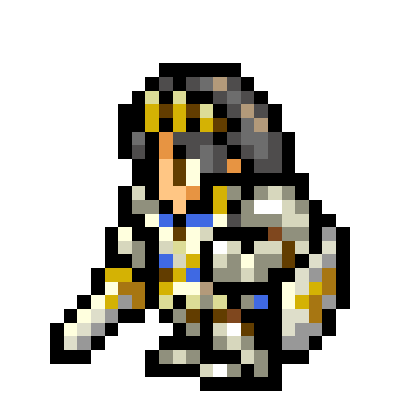
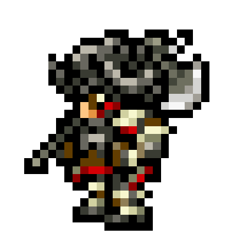
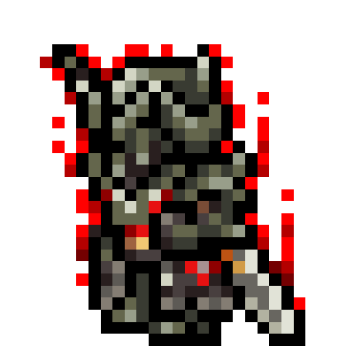

最寄りの観測地点を探索しています…
現在地に近い観測地点から、エオルゼア換算中…
EORZEA HEAT CONVERSION
ACTIVE DUTY
現在地に近い観測地点から、エオルゼア換算中…



FFXIV FAN KIT ARTWORK © SQUARE ENIX
パーティメンバーを招集中…
FIELD STATUS
最寄りの観測地点を探索しています…
LORE VERIFIED
公式の地域設定と、このサイトの推察・演出を混ぜずに表示します。
LEVEL SYNC 100
現在の換算先について公式資料を照合中…
地域名、公式本文に明記された気候・地理、ファンキット素材の出典。
現実の気温・湿度と、各地域の説明や景観がどれほど似ているか。
℃の境界、湿熱DoT、ギミック強度、演出難易度、討滅戦の文言。
読み方：カード上段は公式設定、下段の「換算モデル」は本サイト独自です。ピューロスは公式に「氷炎の地」であり、単純な最高気温枠としては扱いません。
TRIAL: THREE REALMS
現在地 vs 宮崎県庁所在地 vs 暑さの基準・熊谷。同一観測時刻で比較。
対戦データを同期中…
WORLD RANKING
全国の有効観測地点を、同一観測時刻の気温順で表示します。